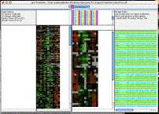

Note that the applet distribution can be built from the source using the "applet" ant target.
[ cdt ]
This garish image demonstrates how you can independantly control the background and foreground colors for genes and arrays using BGCOLOR and FGCOLOR rows and columns. In practice, you would want the colors to represent some kind of biological information; here, I just did something random with excel.
. Open the cdt file in excel to see how it works. [ colorTest.cdt ]
I also have an older example set of files which show how to associate colors with genes which I haven't made a screenshot of.
[ DLim_color.cdt ] [ DLim_color.gtr ]
Special bonus: the perl script which I used to do the coloring:
[ color.pl ]
You can use it as a starting point for your own script. A more mature version may one day make it into the helper-scripts package.
Open in Java TreeView, click on "Analysis->Make Scatterplot..." then select SPOT for the Y-axis and leave INDEX as the X-axis and click "Go!". You should be confronted with a plot similar to the above. Selecting genes in the dendrogram will cause the corresponding spots in the scatterplot to be selected. In the the image shown, a compelling cluster selected in the dendrogram is revealed to be a spot artifact, since nearly all spots in the cluster come from the same spots in the same location on the array (adjacent spot numbers are located in the same sector on Stanford arrays).
[pcl]
This example of a karyoscope was made using data from Proc Natl Acad Sci USA 2002 Dec 10:99(25):16144-9, "Characteristic Genome Rearrangements in Experimental Evolution of Saccharomyces cerevisiae.". Clearly visible is an amplification of the left arm of chromosome 14, and a deletion of the right arm. What is not obvious from the image is the way that java treeview lets you rapidly zoom in on different parts of the image to find out what genes are present at the breakpoints, and what the enrichment ratios are. There are also a lot of visualization options, including color customization and whether or not to draw lines between the tips of the bars.
To recreate and browse this view on your own computer, download the pcl file above, and BE CAREFUL TO SELECT LINKED when you open it in java treeview . If you do not, it will open in classic mode and you won't be able to make the karyoscope plot. Now, select Analysis->Make Karyoscope. A karyoscope display should now appear.
But how to do this with non-yeast datasets? As detailed in the manual, Java Treeview needs to know the coordinates of every gene id in order to display the ratio in the correct part of the karyoscope. The easiest way to do this is to set up a coordinates file for each set of gene ids. I have included coordinate files for human and yeast stanford arrays, and I am willing to help construct such files for other organisms/arrays.
In the abscence of a coordinates file, java treeview can guess where to put yeast genes using the YORF column. For purposes of illustration, let's use a real coordinates file to view this yeast data. To set coordinate, click on the "Coordinates..." button in the upper left panel of the karyoscope display. Next, click "Load from file...". This should pop up a file dialog; navigate to "Treeview/coordinates" (whereever you installed treeview) and select "YeastCoordinates.pcl". The karyoscope should redraw, as the genes shift around a little. Moving the mouse over the image should now indicate the position of each locus in bases from the centromere; fractional positions can result if the orf has an odd number of bases, as I just averaged start and stop.
Open in Java TreeView, click on Analysis->Alignment.
The purpose of this example is to demonstrate how to view sequence alignments with java treeview. My purpose was to make a viewer suitable for looking at large alignments of lots of genes. I found the existing tools to be lacking, and realized that it was fairly easy for me to extend java treeview to do what I wanted.
By selecting "Settings->PixelSettings..." you can make the global view fit in the available space, seeing the whole alignment at once, a feat I could never manage with the clustalx gui. Also, you can hold down shift to zoom in on a particualr section of the global alignment without having to scroll around on the x- axis in the zoomview.
I chose as an example the human FGF receptors. I took the following steps:
~/perl/splitFasta.pl -l fgf_receptors.lst -o fgf_receptors.fasta human_proteome.fa
~/perl/aln2cdt.pl fgf_receptors.aln
You may note that there are some weird terminal branches in the dendrogram. These have not escaped my notice, and result from negative branch lengths in the fgf_receptors.dnd file produced by clustal. For example, consider the following excerpt, which is responsible for perhaps the most egregious weirdness in the example screenshot:
( gi|21264361|ref|NP_631947.1|:0.08162, gi|21264363|ref|NP_006601.2|:-0.05999) :0.30572)As a result, the gi|21264363 leaf node is at an earlier time than its parent branch! I'm not sure how to handle these correctly, or if I am. The dendrogram was of secondary importance to me, so I did not pursue it.
(Requires Java Treeview 1.7 or later)
Java Treeview supports explicit coloring of nodes in the dendrogram. This can be used in a variety of ways, depending upon the ingenuity of the programmer. In this particular example, I have colored in nodes in both the gene and array dendrogram such that subclusters that have correlations higher than 0.7 are colored the same.
NOTE: The figure was made without clustering the experiments, whereas the files were made with experiment clustering. You can't see the array tree coloring in the global view when the genes are selected because that dendrgram becomes entirely selected. There are three ways around this:
The first step is to obtain some data of interest and cluster it using software that creates a cdt, gtr and atr file, such as Cluster 3.0 by M. J. L. de Hoon . In this case, I downloaded the data from Michael Eisen's 1998 PNAS paper "Cluster analysis and display of genome-wide expression patterns". I then reformatted it into PCL format (see File Formats section of User Manual, or Cluster 3.0 user manual) and clustered both genes and arrays with Gavin Sherlock's command line tool, although Cluster 3.0 would work as well. As a shortcut, you could just download the "threshold" files using the links just under the figure above.
Now, we just need to run colorByThreshold.pl, a script from the helper-scripts package (version 0.0.2 or later). If you're just getting started, just put the .gtr and .atr files in the helper-scripts folder and run the following commands:
colorByThreshold.pl -t .7 threshold.gtr colorByThreshold.pl -t .7 threshold.atrHere's an example of what the output should look like:
prompt% ./colorByThreshold.pl -t .7 threshold.gtr Loading from threshold.gtr Loaded 0 Loaded 1000 Loaded 2000 2465 Total Nodes Using header 3, 'CORRELATION' root has -0.606047, looking for subtrees with CORRELATION > .7 Overwriting column 4, NODECOLOR Found 114 clusters prompt% ./colorByThreshold.pl -t .7 threshold.atr Loading from threshold.atr 78 Total Nodes Using header 3, 'CORRELATION' root has -0.141257, looking for subtrees with CORRELATION > .7 Adding column NODECOLOR Found 11 clusters prompt%In other words, we're running the script "colorByThreshold" with a threshold of .7 (meaning requiring a correlation of .7 or better), on both the gtr and atr file. You can change the correlation value to be anything you think is reasonable, guided perhaps by preliminary browsing of the dendrogram. If you want the tree to be all black again, run with a threshold of 1 or more.
{kind=link}